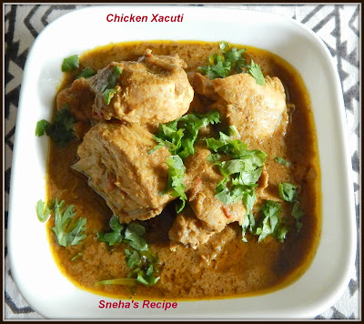

Goan Chicken Xacuti

What Is Xacuti?
No family gathering was complete without this dish.
So, What is it?
Xacuti(pronounced Shāgōtī) is a coconut based
curry(It originated from Harmal/Arambol, Goa ) made with variety of spices
and poppy seeds. You can use any non veg protein(mostly chicken) or
mushroom.
It's mildly thick, loved by Goans and tourists alike and leaves you with
an empty plate, asking for more every time.
Ingredients
- 1/2 kg chicken
- 2 & 1/2 teaspoon turmeric powder
- 4 teaspoon salt
- 2 tablespoon ginger garlic paste
- 1/2 coconut grated
- 4 dried kashmiri chillies
- 2 tablespoon coriander seeds
- 1 teaspoon poppy seeds
- 2 small sticks of cinnamon
- 10 cloves
- 10 black pepper pods
- 5 cardamom pods
- 1/2 nutmeg
- 2 chopped onions
- 2 green chillies
- 1 chopped tomato
- 2 teaspoon red chilli powder
- Extra chopped onions and coriander for garnish
Method
-
Roast all the spices and grated coconut for a couple of minutes till
they start to toast and turn aromatic. Set it aside to cool. In
the same pan add a little oil, chopped onion and green chilli and sauté
till the chillies blister and the onions turn golden brown. Set
aside to cool.
-
While the mixture is cooling down, marinate your chicken with salt,
turmeric and ginger garlic paste.
-
Once the mixtures have cooled add all of it to a blender along with 2
teaspoons of turmeric and some water and grind into a paste. You might
have to keep scraping down the sides and adding more water to grind it
into a smooth paste.
-
In your crockpot add some oil and chopped onion, cook for 2 minutes till
it turns golden brown and add chopped tomato. Cook for a couple of
minutes till it breaks down and then add in your marinated chicken. Cook
for 2 minutes mixing it all and add a cup or two of water. Cover and let
it cook for 5 minutes.
-
After 5 or 6 minutes, add in the masala paste along with some more water
another cup or two mix well and let this cook for a few minutes. Add
salt to taste, 1 teaspoon of red chilli powder and cover and let it cook
for another 20 minutes. I cook this entire curry for a total of 30
minutes so the chicken on the bone cooks through and the masala paste
has time to cook and thicken slightly.
-
If the gravy is too watery keep cooking for a few more minutes. You need
to find a balance where the gravy isn’t too thick or thin. Once cooked
serve hot with a garnish of chopped onion and coriander. Eat hot with
roti or rice and enjoy.